Business Strategy and the Environment · 2026
AI-Driven Marketing Strategy as a Catalyst for Circular Economy Participation
ABDC AIF 13.2First authorRead article
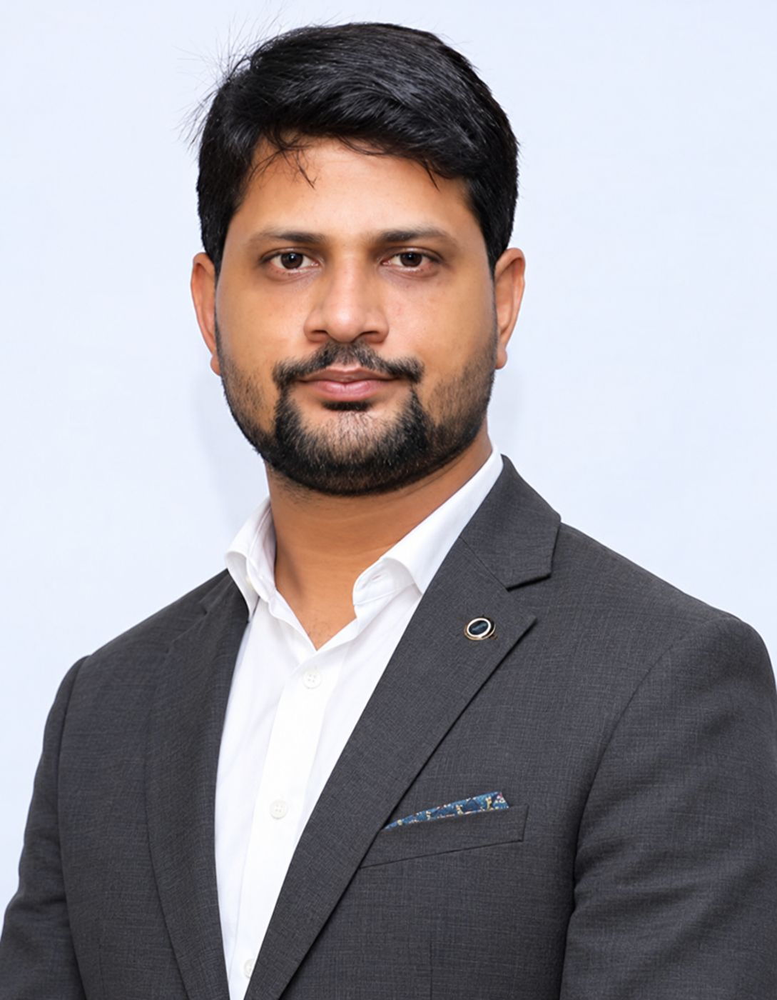
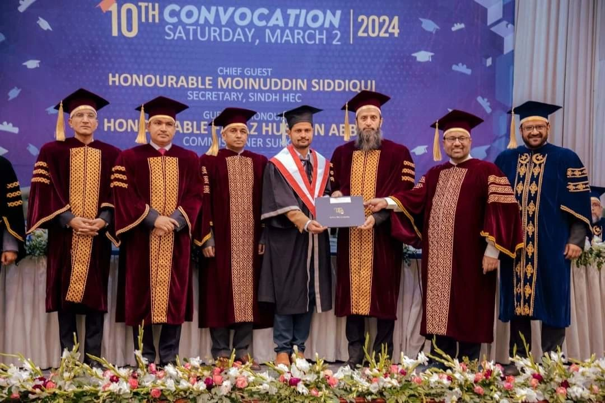
Dr. Rana Salman Anwar studies how organisations manage people in a period of artificial intelligence, environmental pressure and workforce diversity.
His work covers AI in human resource management, green HRM and environmental performance, workplace xenophobia and diversity management, and sustainable consumer behaviour. It appears in Business Strategy and the Environment, Journal of Innovation & Knowledge, Management Review Quarterly and International Entrepreneurship and Management Journal. Three of his papers have been named Top Cited by Elsevier, Wiley and Frontiers.
Read the full biography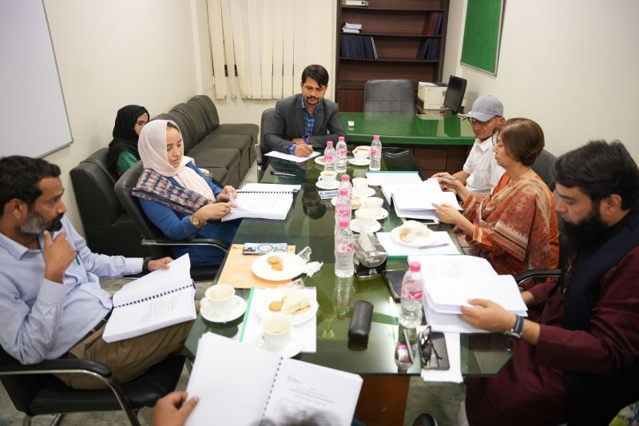
Academic posts, leadership roles and the accredited institutions behind them.
Explore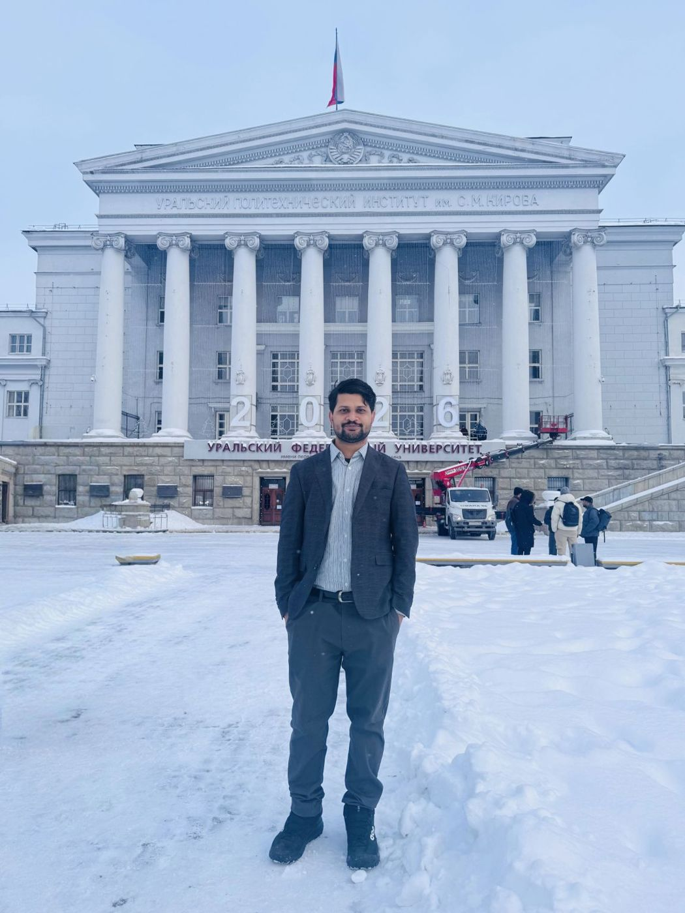
Six research streams, methods and international collaboration.
Explore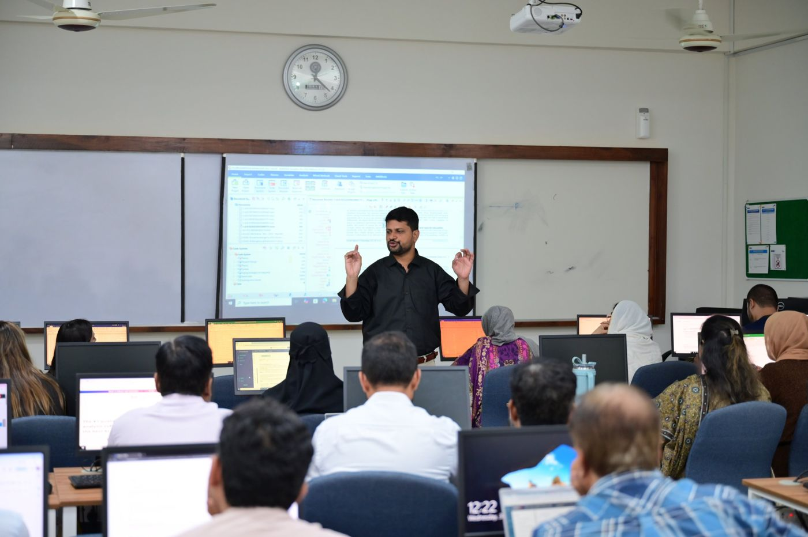
Workshops on systematic reviews, SEM and publishing for faculty and scholars.
Explore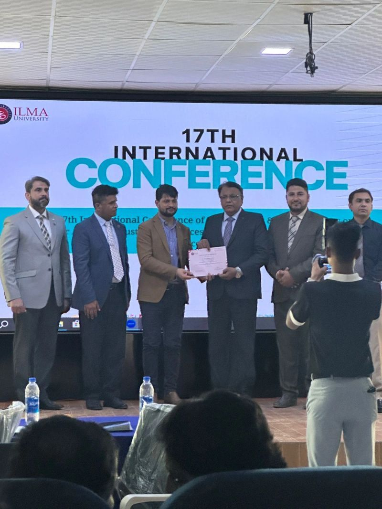
Convocations, conferences, trainings and student engagement.
ExploreJournal of Innovation & Knowledge, for research on phygital products and sustainable consumption.
Frontiers in Sociology, for research on frugal innovation in SMEs.
Asia Pacific Journal of Human Resources, for research on AI and employee productivity.
First position, PhD (Management), conferred at the 10th Convocation.
Institutional Merit Scholarship 2019–20 and Merit Certificate 2021.
BBA (Hons), Department of Management Sciences.
Academic, researcher and research trainer working across Pakistan and Russia.
Dr. Rana Salman Anwar is an Assistant Professor at the FAST School of Management, FAST National University of Computer and Emerging Sciences, where he heads the Human Resource Cluster and the campus AACSB Committee.
He earned his BBA (Hons), with a Silver Medal, and his MBA at The Islamia University of Bahawalpur. He then completed a PhD in Business Administration at Sukkur IBA University, an AACSB-accredited school, graduating first in his cohort with the Gold Medal. He went on to post-doctoral research as a Senior Research Fellow at Ural Federal University in Yekaterinburg, Russia.
Before joining FAST, he served as Assistant Professor and Manager of the Faculty of Management Sciences at Indus University, Karachi. There he was Secretary of the Board of Studies and Board of Faculty, and contributed to curriculum reform for AI, Bloom's taxonomy and DELTA standards. Earlier he taught at Sukkur IBA University's Dadu campus and worked in school administration and industry.
He is an HEC-approved MS/PhD supervisor. He regularly trains faculty and doctoral scholars in systematic literature reviews, structural equation modelling and research publishing.
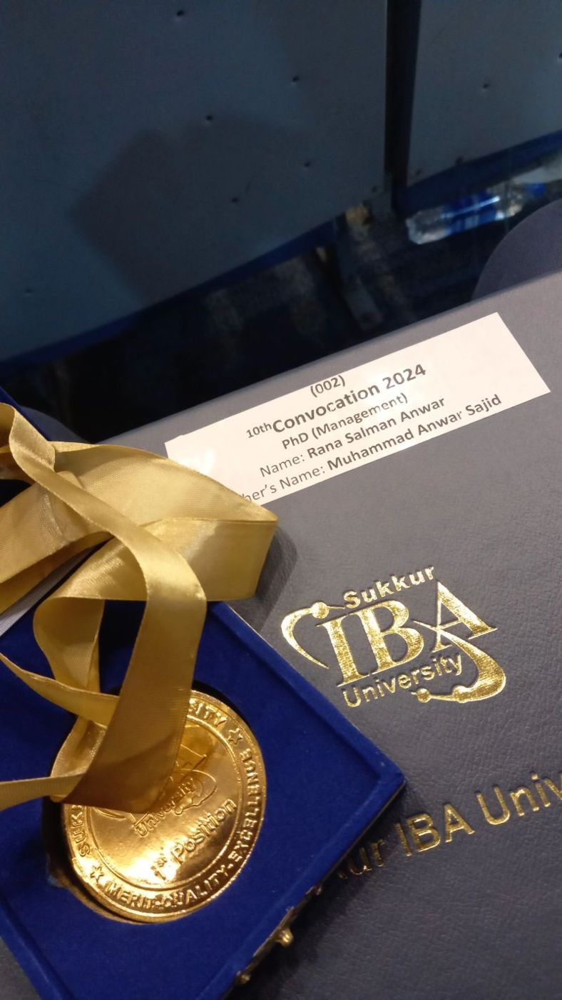
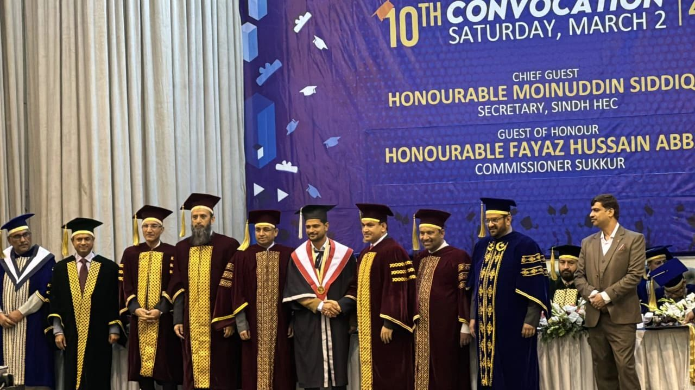
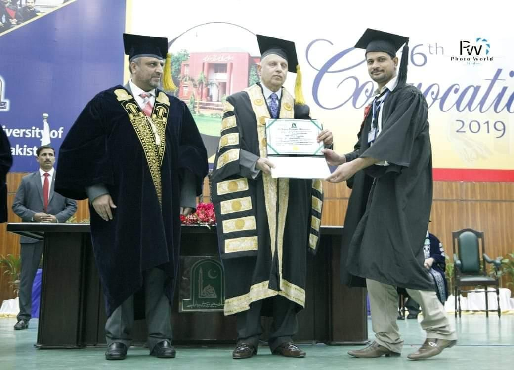
More than ten years in teaching, research and academic administration at accredited institutions in Pakistan and Russia.
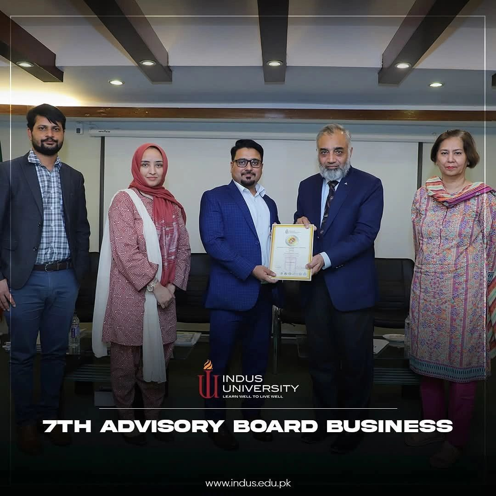
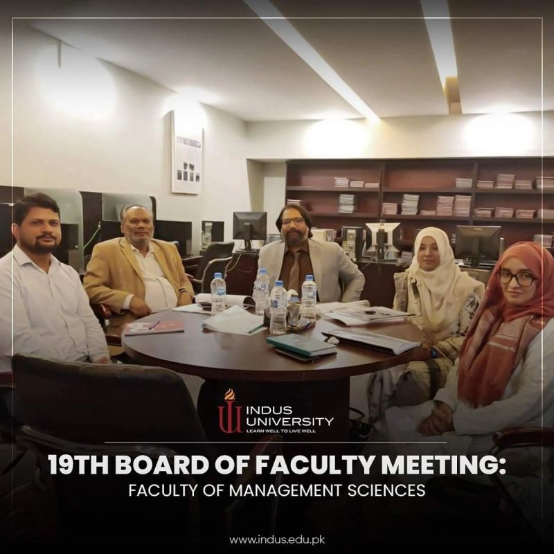
Quantitative and mixed-methods research that pairs structural equation modelling with machine-learning techniques, alongside rigorous systematic reviews.
How AI changes employee productivity, knowledge sharing and well-being; AI-enabled talent acquisition; digital competence of faculty.
Green strategy across HRM, marketing and culture; corporate environmental responsibility; greenwashing and green-hushing.
Human resource diversity management as a response to xenophobia, change resistance and exclusion in transnational workplaces.
Phygital products, customer engagement, AI-driven marketing for the circular economy and green marketing assessment.
Frugal innovation in SMEs, cross-cultural entrepreneurship training and sustainable entrepreneurship in technology firms.
Career calling, psychological capital, career adaptability and tacit-knowledge transfer through mentoring.
Survey-based designs analysed with PLS-SEM and CB-SEM, often combined with artificial neural networks, support vector machines or decision trees to test non-linear effects. Systematic reviews follow PRISMA and TCCM frameworks.
He publishes regularly with international co-authors, including Dalia Streimikiene, Justas Streimikis, Wadim Strielkowski and Armenia Androniceanu, alongside long-standing collaborators in Pakistan such as Rizwan Raheem Ahmed, Gul Afshan and Khalil Ahmed Channa.
28 refereed journal articles and 3 refereed conference papers, including journals ranked A by ABDC and indexed by HEC in the W category.
Hands-on research training for universities and research centres, and one-to-one counselling for MS and PhD scholars and early-career faculty.
Send your topic, group size, preferred dates and format through the contact page.
A short call to agree on goals, participants' level and software.
A session plan with datasets, exercises and materials built for your group.
On-site or online delivery, with follow-up support for participants' projects.
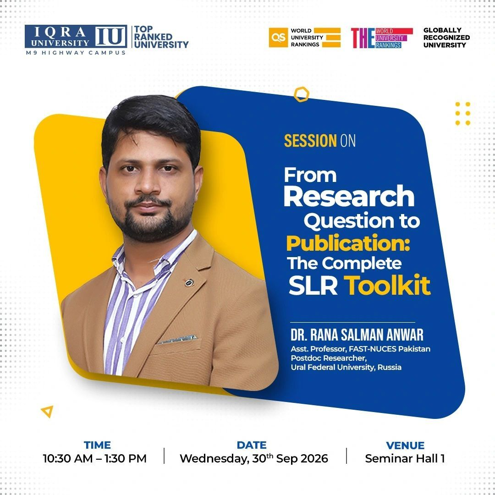
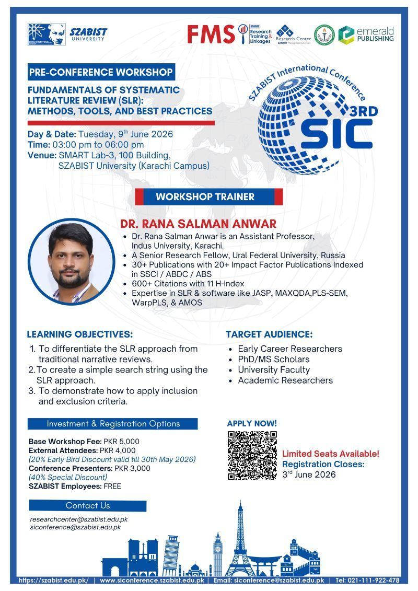
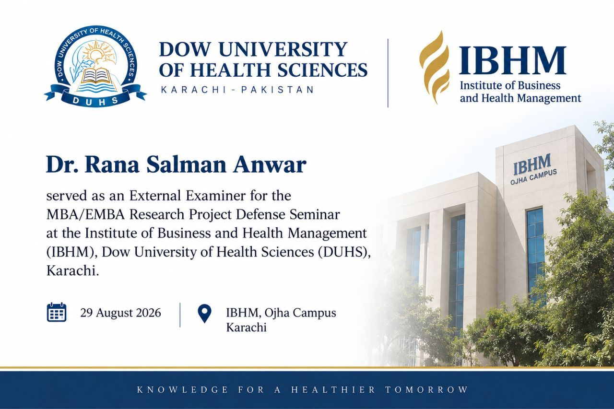
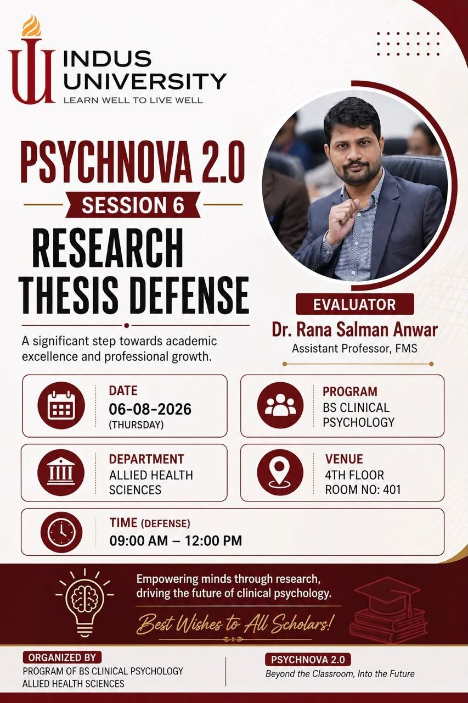
Convocations, conferences, trainings, academic governance and work with students.
For research training, counselling, examination, collaboration or speaking invitations.
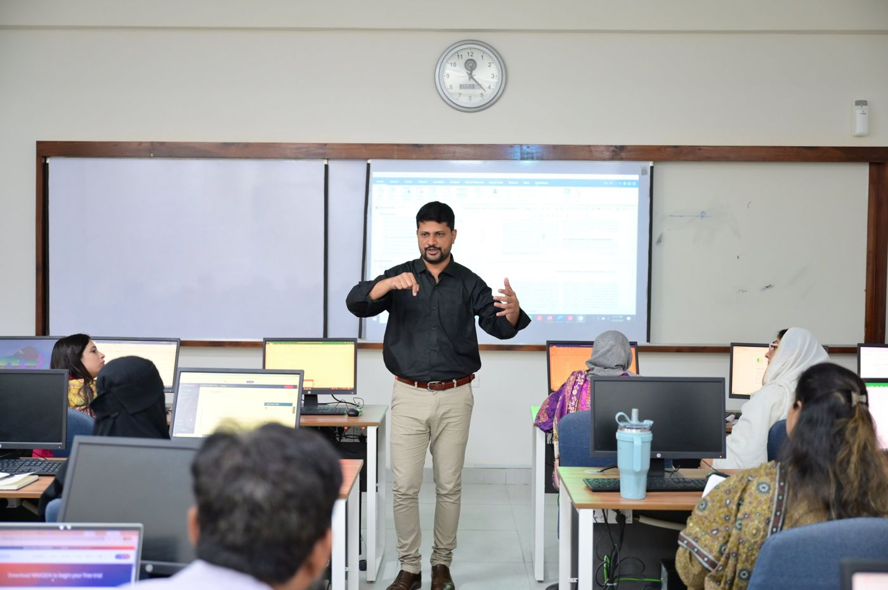